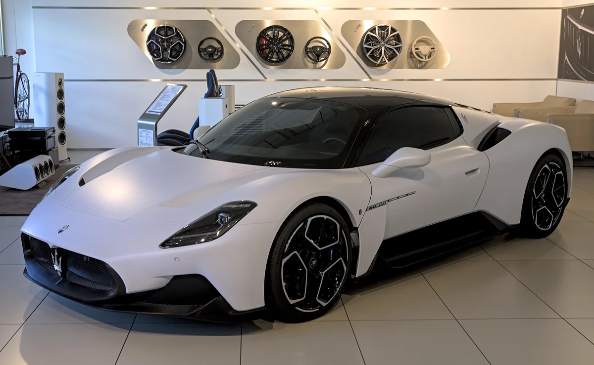
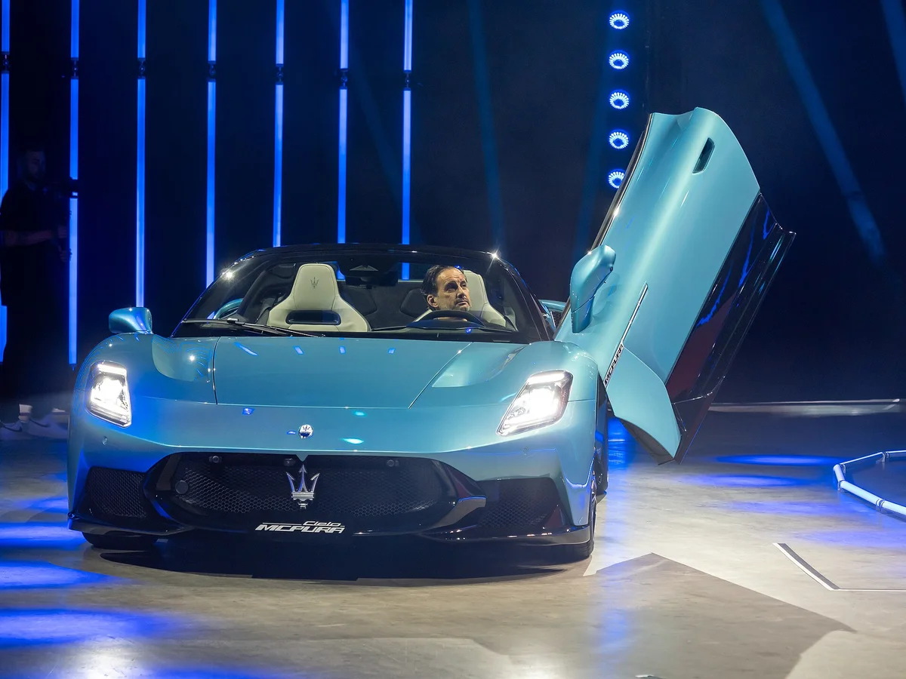
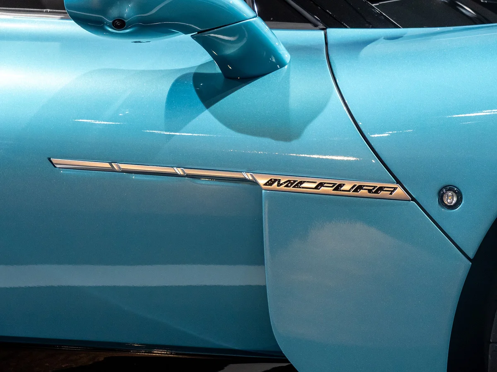
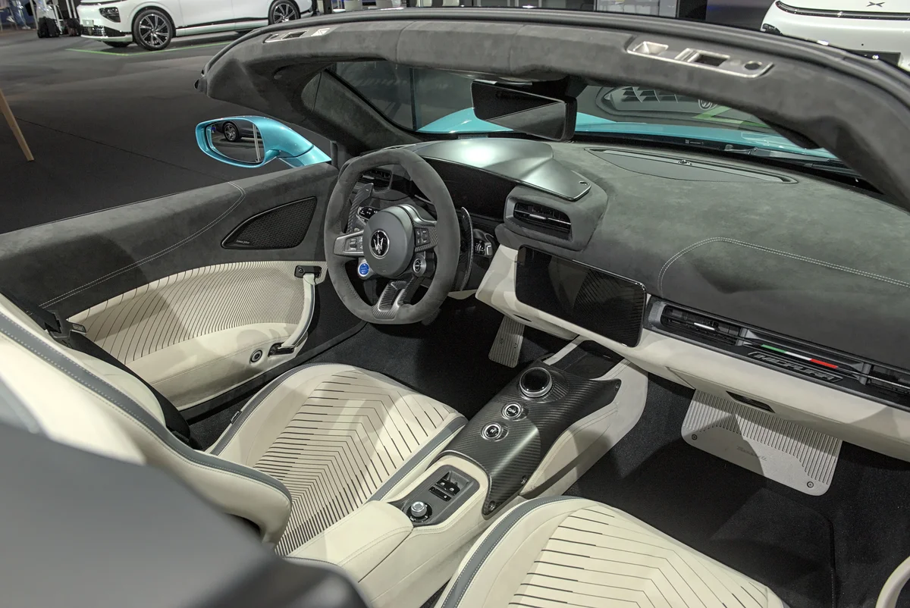
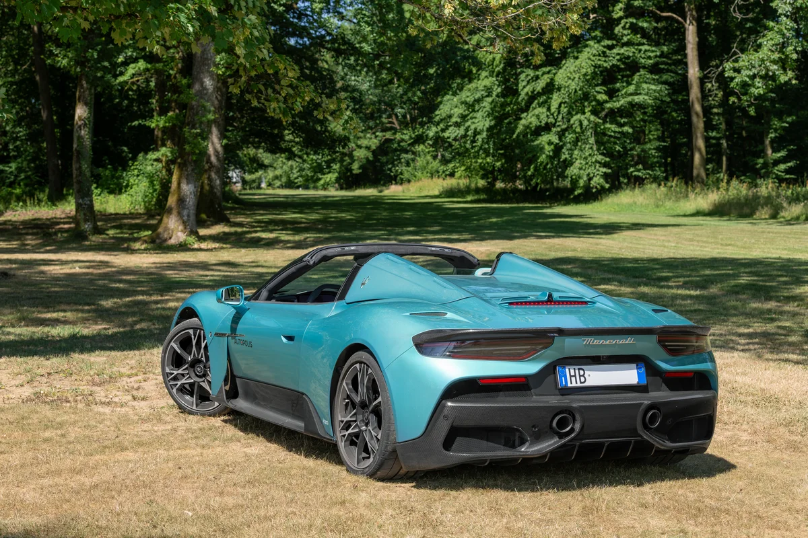
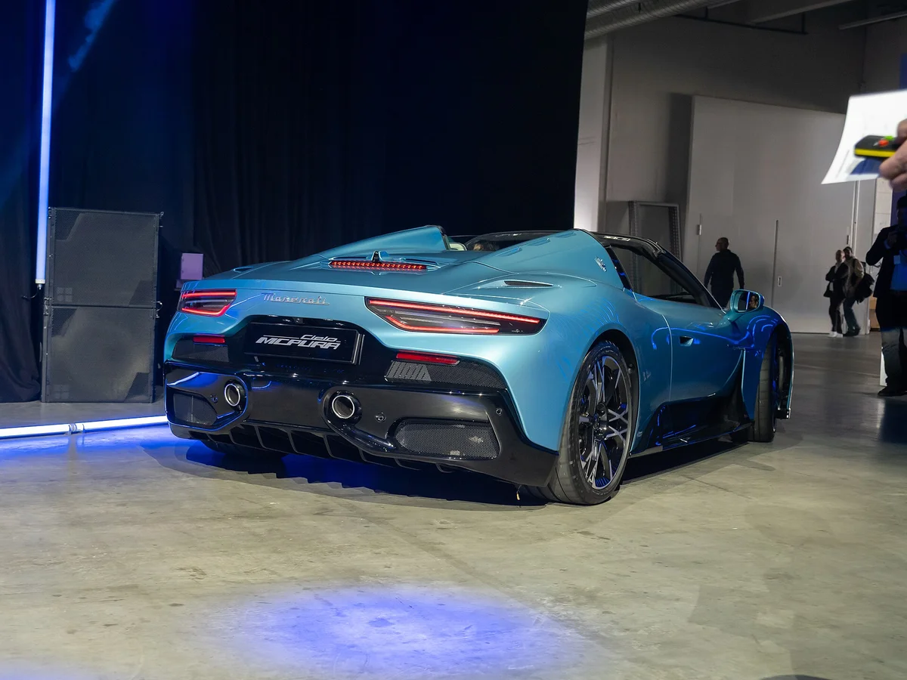
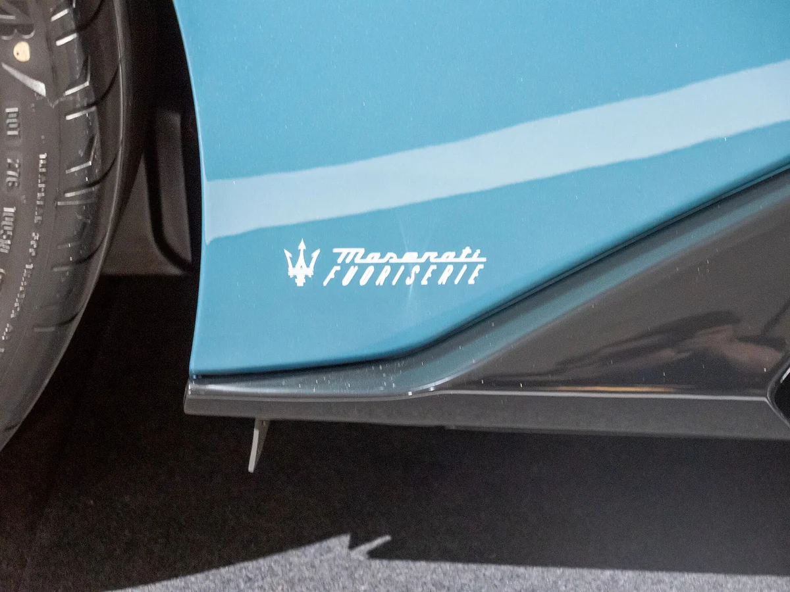
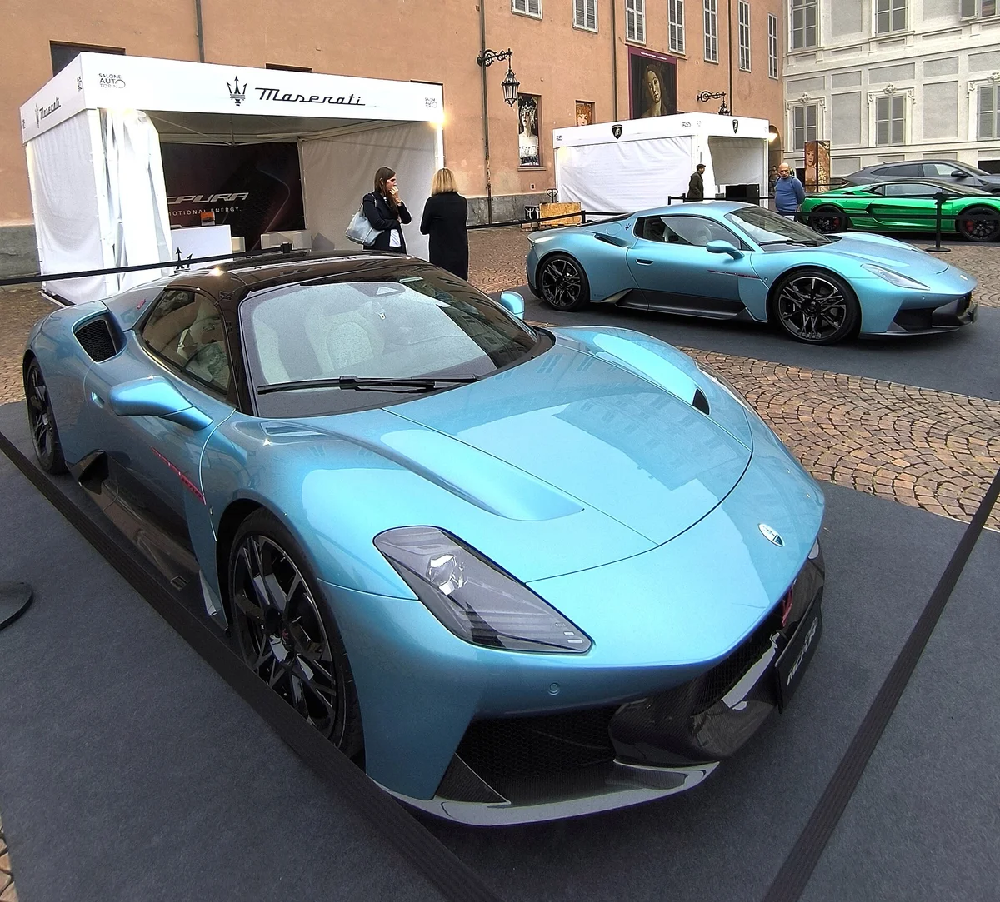
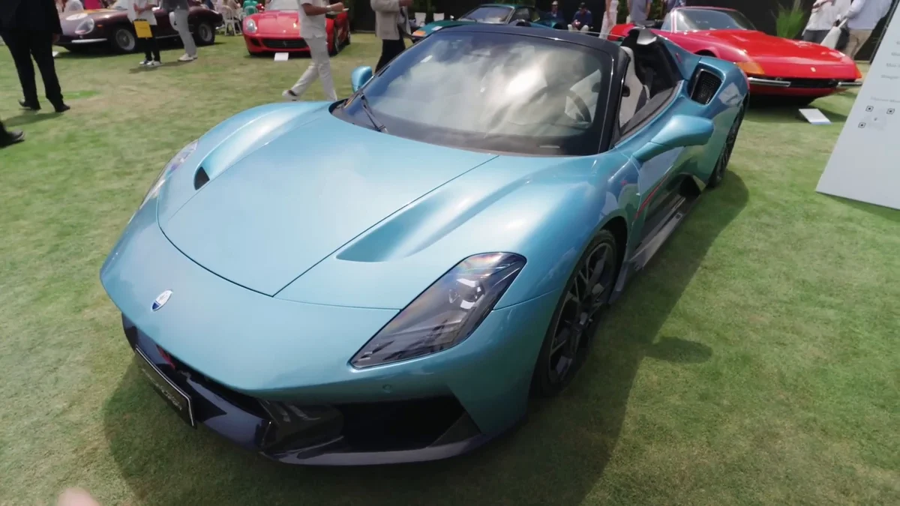
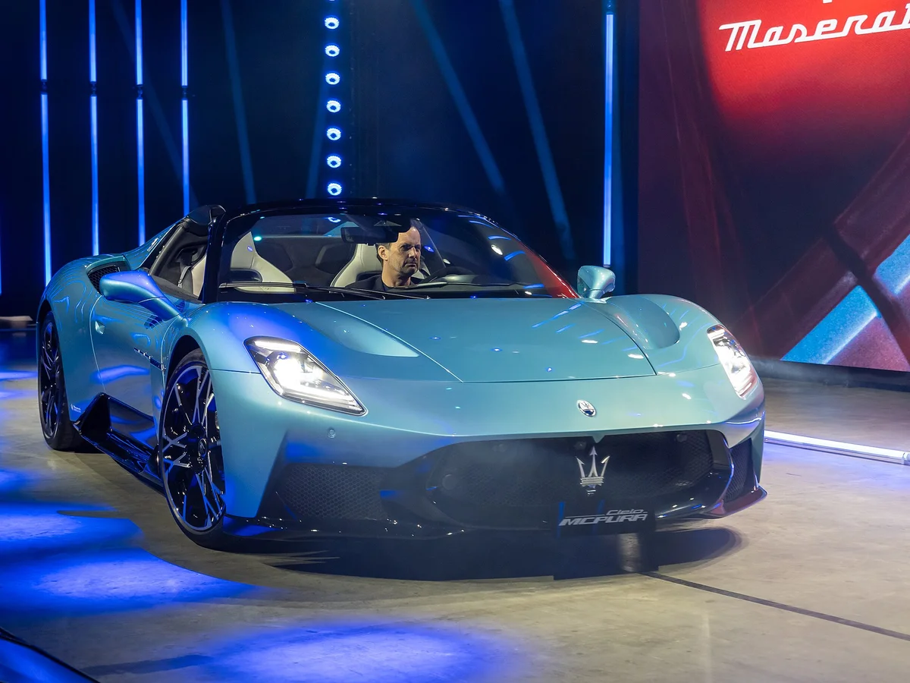

▲ 마세라티 MCPura 첼로(2025 오토 취리히) ⓒ Alexander Migl, Wikimedia Commons (CC BY-SA 4.0)
MC20이라는 이름이 사라졌는데, 차는 그대로라면 무엇이 달라진 걸까. 마세라티 미드십 슈퍼카가 2025년 'MCPura'로 이름을 바꾸고 나온 뒤, 2027년형이 중국에 등장하면서 헷갈리는 사람이 늘었다.
이 글은 이름이 왜 바뀌었는지, 출력과 가속 같은 사양이 정말 달라졌는지, 국내 가격과 해외 가격은 얼마인지를 확인된 자료 기준으로 정리한다. 확인하지 못한 부분은 "미확인"으로 남겼다.
1. MC20은 어디로 갔나 — MCPura로 이름이 바뀐 경위
마세라티는 2025년 7월 영국 굿우드 페스티벌 오브 스피드에서 MCPura를 공개했다. 스텔란티스 보도자료는 이 차를 MC20의 진화형으로 소개했고, 국내 보도자료도 "MC20를 계승하는" 슈퍼 스포츠카라고 밝혔다. 즉 완전히 새로운 차가 아니라 MC20를 다듬어 이름을 바꾼 모델이다.
'푸라(pura)'는 이탈리아어로 순수함을 뜻한다. 마세라티코리아는 이를 "브랜드 근본과 스포츠카 본질에 집중한다"는 철학이라고 설명했다. 다만 이름을 바꾼 구체적인 사유를 밝힌 공식 자료는 확인하지 못했다.

▲ MCPura의 전신인 MC20(사진은 2021년 IAA 전시차) ⓒ Alexander Migl, Wikimedia Commons (CC BY-SA 4.0)
일부 매체는 MCPura를 "페이스리프트 모델"로 부른다. 출시 5년 가까이 된 MC20에 디자인과 소재 변화를 준 것이 핵심이기 때문이다. 마세라티 공식 소개는 마세라티 공식 스토리 바로가기에서 볼 수 있다.
2. 사양 — 출력·가속은 MC20과 같다
엔진은 마세라티가 100% 자체 개발했다고 밝힌 3.0L V6 '네튜노(Nettuno)'다. 포뮬러 1 기술에서 파생된 프리챔버 연소 방식과 트윈 스파크 플러그가 핵심이다. 차체는 이탈리아 달라라와 개발한 카본 파이버 모노코크다(마세라티코리아 보도자료).
| 항목 | MCPura(쿠페) | MCPura 첼로(컨버터블) |
|---|---|---|
| 엔진 | 3.0L V6 트윈터보 '네튜노', 미드십 후륜 구동 | |
| 최고 출력 | 630PS(621hp, 470kW) / 7,500rpm | |
| 최대 토크 | 730Nm / 3,000~5,500rpm | |
| 변속기 | 8단 듀얼 클러치 | |
| 0→100km/h | 2.9초(국내 발표 기준) | |
| 최고 속도 | 325km/h 이상(해외 보도) | 320km/h |
출처: 마세라티코리아 보도자료(오토뷰 보도), paultan.org의 공개 당시 사양 정리. 최고 속도는 국내 보도자료에 320km/h로만 표기돼 있고, 쿠페 325km/h 이상은 해외 보도 기준이다. 공차중량은 아래 별도 항목으로 정리했다.
무게와 크기는 기준마다 다르다. 오토뷰가 2026년 4월 8일 게재한 MC푸라 첼로 리뷰의 국내 제원표는 전장×전폭×전고 4,667×1,965×1,214mm, 휠베이스 2,700mm, 공차중량 1,715kg이다. 같은 리뷰의 실측 중량은 1,803.0kg(탑을 닫았을 때와 열었을 때 동일)이었다. 해외에서는 쿠페를 "1,500kg 미만"으로 소개한 매체가 많고, 독일 ADAC는 첼로의 EU 공차중량을 1,534kg으로 적는 등 연료·운전자 포함 여부에 따라 수치가 달라 단순 비교는 어렵다.
같은 리뷰의 국내 복합 연비는 7.1km/ℓ(도심 6.0, 고속 9.1), 5등급, CO2 배출량 253g/km다. 가속은 제조사 발표(0→100km/h 2.9초, 0→200km/h 8.8초)와 달리 오토뷰 계측에서 각각 3.60초, 10.61초가 나왔다. 계측 조건이 다르므로 제조사 수치와 실측치를 같은 잣대로 놓고 우열을 가리기보다 참고용으로 보는 편이 맞다.
MC20 당시 수치와 같다는 점이 중요하다. paultan.org는 "같은 3.0L 네튜노 V6, 630PS"라고 정리했다. 성능을 올리는 개선이 아니라, 겉모습과 취향 선택지를 손본 쪽에 가깝다.

▲ 버터플라이 도어를 위로 연 MCPura 첼로(2025 오토 취리히 미디어 스테이지) ⓒ Matti Blume, Wikimedia Commons (CC BY-SA 4.0)
3. 무엇이 바뀌었나 — 범퍼·색상·시트
가장 눈에 띄는 변화는 앞뒤 범퍼다. 앞은 사다리꼴에 가까운 그릴과 GT2 스트라달레 레이스카에서 영감을 받은 범퍼, 뒤는 새 디퓨저와 입체적인 범퍼가 적용됐다. 하단과 사이드 스커트는 글로시 블랙 마감이다.
색상은 굿우드 공개 때 'AI 아쿠아 레인보우'(쿠페는 무광, 첼로는 유광)를 선보였고, 데빌 오렌지·베르데 로얄레·나이트 인터랙션이 새로 추가됐다. 실내는 MC20과 거의 같지만 레이저로 새긴 알칸타라 시트가 새로 들어갔다(paultan.org).

▲ 측면 'MCPura' 레터링 ⓒ Matti Blume, Wikimedia Commons (CC BY-SA 4.0)

▲ MCPura 첼로 실내(전시차) ⓒ Alexander Migl, Wikimedia Commons (CC BY-SA 4.0)
4. 첼로(Cielo) — 스파이더가 아니라 유리 루프 컨버터블
컨버터블 버전의 이름은 스파이더가 아니라 '첼로'(이탈리아어로 하늘)다. 천 지붕이 아니라 개폐식 글라스 루프를 쓰는 것이 특징이다. 마세라티코리아는 PDLC 기술로 버튼 하나에 투명에서 불투명으로 전환되며, 여는 데 12초가 걸린다고 밝혔다.
▲ MCPura 첼로 전면(2025 오토 취리히) ⓒ Alexander Migl, Wikimedia Commons (CC BY-SA 4.0)

▲ MCPura 첼로 후면 ⓒ Alexandre Prevot, Wikimedia Commons (CC BY-SA 4.0)

▲ MCPura 첼로 후면 3/4, 루프를 연 모습(2025 오토 취리히) ⓒ Matti Blume, Wikimedia Commons (CC BY-SA 4.0)

▲ 사이드 스커트의 '마세라티 푸오리세리에(Fuoriserie)' 로고. 맞춤 제작 프로그램 사양 전시차(2025 오토 취리히) ⓒ Matti Blume, Wikimedia Commons (CC BY-SA 4.0)
쿠페와 첼로의 최고 속도 차이(325 대 320km/h)는 해외 보도에서만 확인된다. 0→100km/h는 두 모델이 같게 보도됐으나, 일부 해외 매체는 첼로를 3.0초로 적어 출처마다 다르다.
5. 가격 — 국내 3억 원대, 해외는 통화별로
| 시장 | MCPura(쿠페) | MCPura 첼로 | 비고 |
|---|---|---|---|
| 한국 | 3억 3,880만 원~ | 3억 7,700만 원~ | 5년 무상 보증·3년 메인터넌스 포함, 주문 제작 |
| 스페인 | 257,479유로 | 297,179유로 | motor.es 2025년 8월 5일 게재 기준. 현재 가격표는 미확인 |
| 중국(2027년형) | 237만 위안 | 270만 위안 | 2026년 10월 5일 출시 보도(HK01·IT之家) |
참고로 독일 ADAC 자동차 카탈로그는 첼로 기본가를 275,000유로로, 이탈리아 매체 Drivek는 첼로를 259,996유로(부가세 포함)부터로 적는 등 유럽 안에서도 나라와 시점에 따라 표기가 다르다. 한국 가격은 국내 카탈로그 사이트(카위키)에 3억 3,880만~3억 4,570만 원으로 범위가 나오는 곳도 있으나 상한이 어느 사양 기준인지는 확인되지 않았다.
해외 가격은 세금과 옵션 기준이 나라마다 달라 직접 비교하기 어렵다. 이 글은 현지 통화 그대로 표기했고 원화 환산은 하지 않았다.
6. 한국 시장 — 사전 주문 중, 2027년형은 미확인
마세라티는 2025년 12월 17일 서울 용산 전시장에서 MCPura를 국내 최초 공개하고 사전 주문을 시작했다. 전 세계 동일하게 주문 제작 방식으로, 모데나 비알레 치로 메노티 공장에서 계약 순서대로 생산한다.
가격은 쿠페 3억 3,880만 원, 첼로 3억 7,700만 원부터로 발표됐다(오토뷰가 전한 마세라티코리아 보도자료). 같은 금액이 2026년 4월 8일 오토뷰 MC푸라 첼로 리뷰의 가격 표기(MCPURA 3억 3,880만 원부터, 첼로 3억 7,700만 원부터)에도 그대로 나온다. 다만 마세라티코리아 홈페이지의 공식 가격표 원문은 접속해 확인하지 못했고, 옵션에 따라 금액이 달라지며 사전 고지 없이 바뀔 수 있다. 계약 전에는 전시장에서 최종 금액을 확인하는 것이 안전하다.
2027년형 국내 도입 여부와 가격은 확인된 자료가 없다. 2027년형 MCPura가 2026년 10월 5일 중국에서 출시됐다는 보도만 있으며, HK01과 IT之家가 같은 내용을 전했다. 가격은 쿠페 237만 위안, 첼로 270만 위안이다. 두 보도 모두 10.25인치 중앙·계기판 화면, 12스피커 소너스 파베르 오디오, 알칸타라 마감, 평평한 하단의 새 스티어링 휠을 소개하지만 2026년형과 무엇이 달라졌는지는 비교하지 않았고, 3.0L V6 630마력·730Nm 동력계는 그대로라고 적었다. 따라서 2027년형의 구체적 변경점은 확인되지 않았다.

▲ 2025년 9월 토리노 오토쇼 마세라티 전시 구역의 MCPura 첼로 ⓒ Dobroš, Wikimedia Commons (CC BY-SA 4.0)

▲ 야외 전시 중인 MCPura 첼로 ⓒ Belliniska, Wikimedia Commons (CC0)
마세라티 국내 소식은 그레칼레 '하얀 겨울' 한정판 기사에서, 같은 네튜노 V6 계열을 쓴 SUV는 그레칼레 트로페오 시승기에서 볼 수 있다.
7. 같은 급 슈퍼카와 브랜드 사정 함께 보기
마세라티가 어려운 시기를 보내고 있다는 점은 별도 기사에서 다뤘다. 판매 부진과 파트너십 소식은 마세라티·화웨이 협력 기사에서 확인할 수 있다. 이 글에서는 브랜드 전략 해석은 하지 않는다.
슈퍼카 가격과 최신 흐름은 슈퍼카 시세 기사, 람보르기니 레부엘토 미우라 헌정판, 포르쉐 미션 S 기사에서 이어서 볼 수 있다.

▲ MCPura 첼로(2025 오토 취리히 미디어 스테이지) ⓒ Matti Blume, Wikimedia Commons (CC BY-SA 4.0)
8. 요약
MCPura는 MC20의 개명·페이스리프트 모델이다. 2025년 7월 굿우드에서 공개됐고, 3.0L 네튜노 V6 630PS·730Nm·제로백 2.9초 등 핵심 수치는 MC20과 같게 보도됐다. 바뀐 것은 범퍼와 색상, 시트 소재 같은 외관·취향 부분이다.
컨버터블은 스파이더가 아니라 '첼로'이며 글라스 루프를 쓴다. 국내에서는 쿠페 3억 3,880만 원, 첼로 3억 7,700만 원부터 사전 주문 중이다(마세라티코리아 발표 기준).
2027년형은 중국 출시만 보도됐다. 국내 2027년형 도입과 가격, 개명 사유의 공식 설명은 확인하지 못했다.